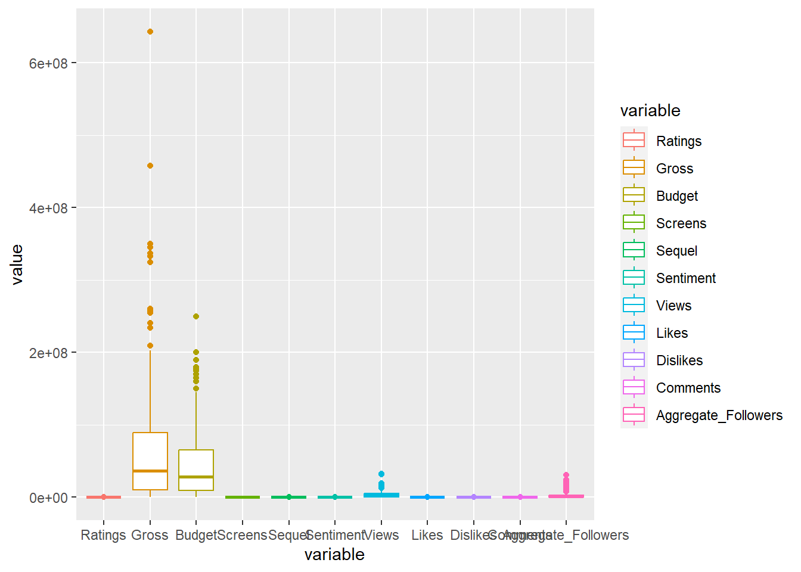
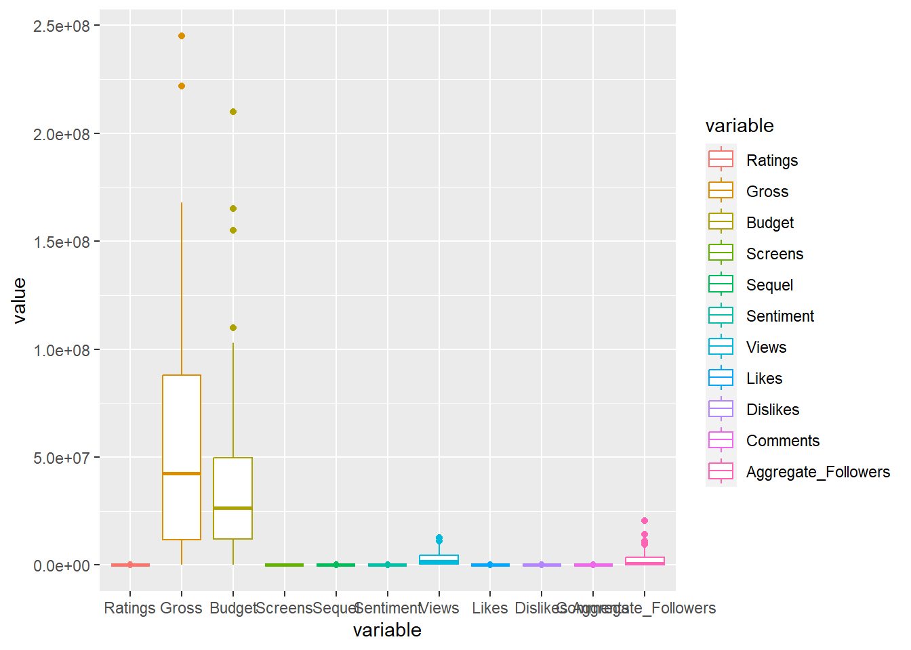
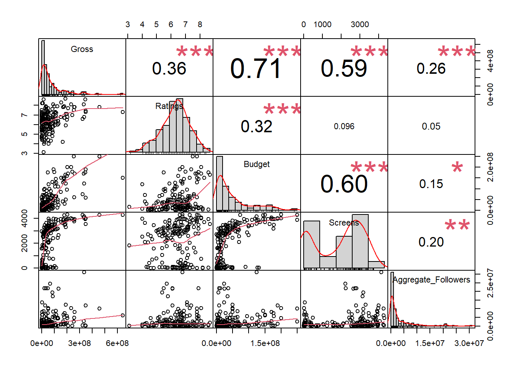
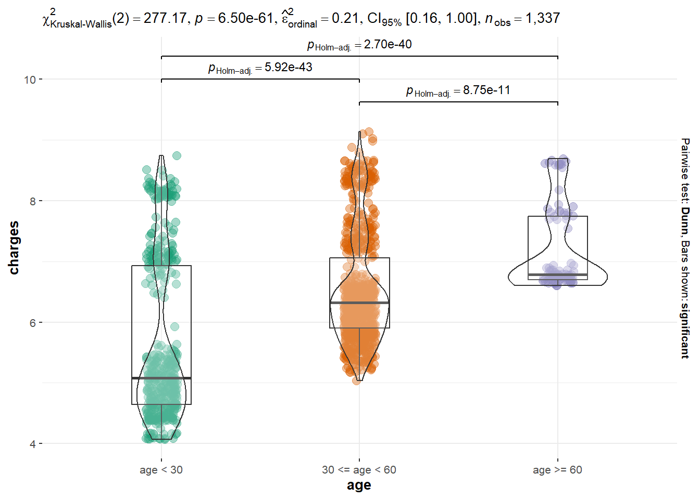
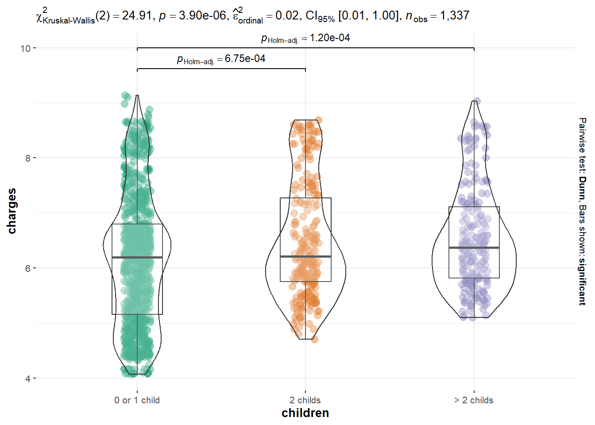
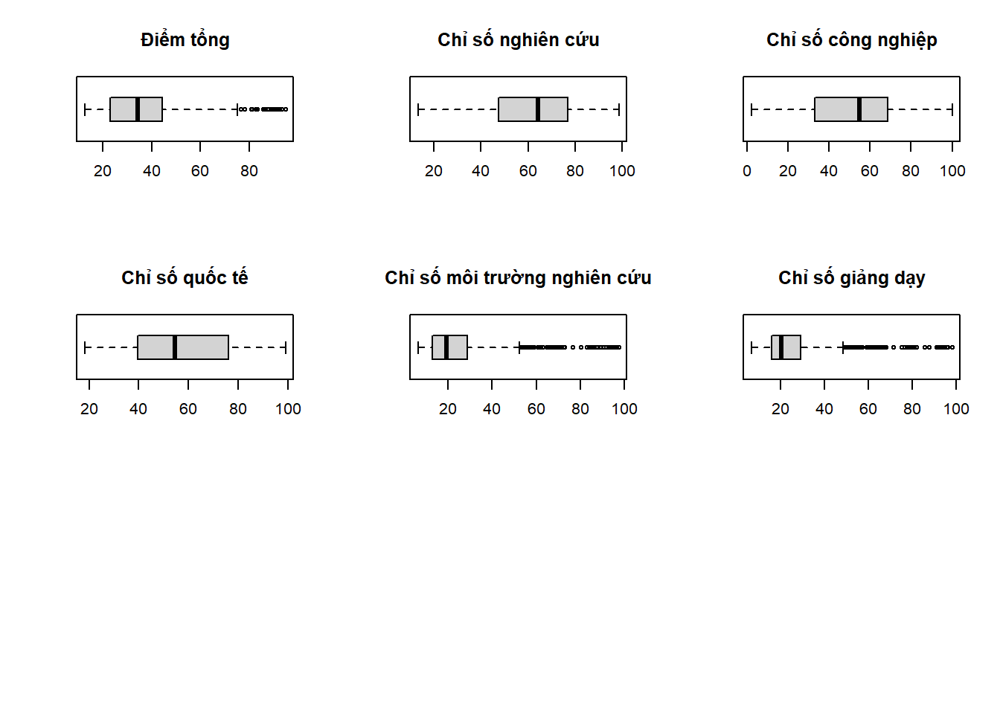

Như vậy tập dữ liệu có 231 quan trắc với 14 biến, không có dữ liệu bị trùng lặp (trong đó có biến Movie là biến character- cần được loại bỏ ra khỏi tập dữ liệu). Tập dữ liệu cho ta thấy có biến Screens, chiếm 4.33% và biến Aggregate_Followers chiếm tỉ lệ 15.15% bị khuyết.
Để xử lí, ta giả định dữ liệu bị khuyết là dạng MAR và sử dụng thuật toán MICE (Multiple Imputation by Chained Equations) để thay thế giá trị bị khuyết. Việc sử dụng method=‘cart’ vì trong tập dữ liệu có biến độc lập là biến định tính. Sau cùng ta kiểm tra lại tập dữ liệu có còn dữ liệu khuyết nào hay không nhờ lệnh colSums(is.na(data1))
Ta tạo biến giả (dummies) cho biến độc lập Genre (thể loại phim). Ta sử dụng package “fastDummies”)
Code
data1 <-dummy_cols(data1, select_columns ='Genre')# Loại bỏ biến Genre sau khi tạo biến giảdata1 <-subset(data1, select =-Genre)
Tạo tập train và tập validation với tỉ lệ 80-20
Code
set.seed(42)#Tạo id columndata1$id <-1:nrow(data1)#sử dụng 80% cho tập training và 20% cho tập validationtrain <- data1 %>% dplyr::sample_frac(0.8)val <- dplyr::anti_join(data1, train, by ='id')train <-subset(train, select =-id)val <-subset(val, select =-id)
Kiểm tra nhanh với biểu đồ boxplot ở từng biến dữ liệu (không thực hiện với biến Year (chỉ có giá trị 2014-2015) và Genre (biến định tính)), ta thấy ở cả tập train và val có khá nhiều outlier, kể cả biến phụ thuộc ta quan tâm.


Tuy nhiên sử dụng biểu đồ có thể khiến ta mất thông tin. Kiểm tra cụ thể đếm số lượng outlier ở từng cột với lệnh length(boxplot.stats(train$COLUMN_NAME)$out), ta nhận được kết quả là ngoại trừ biến Screens, còn lại tất cả đều có xuất hiện outlier.
Số lượng outlier ở từng biến là khá nhiều, việc xuất hiện outlier có thể sẽ ảnh hưởng đến tính chuẩn ở từng biến dữ liệu (có thể cần xem xét thực hiện biến đổi biến nếu các giả định không thỏa khi xây dựng mô hình). Ngoài ra, Việc loại bỏ outlier cũng không có thể dẫn đến việc mất nhiều thông tin từ tập huấn luyện. Outlier ở các biến độc lập có thể ảnh hưởng đến giá trị của biến phụ thuộc (doanh thu). Vì vậy thay vì loại bỏ các outlier trên, ta quyết định sẽ giữ các giá trị outlier lại.
Chọn mô hình
Trước hết tiến hành xây dựng một mô hình hồi quy tuyến tính, sau đó sẽ tiến hành kiểm tra các giả định của mô hình, ví dụ như kiểm tra tính chuẩn, trung bình và phương sai,…
Code
mod <-lm(Gross ~ ., data = train)summary(mod)
Call:
lm(formula = Gross ~ ., data = train)
Residuals:
Min 1Q Median 3Q Max
-129566584 -30389057 -4381397 20855519 411235192
Coefficients: (1 not defined because of singularities)
Estimate Std. Error t value Pr(>|t|)
(Intercept) -5.256e+09 2.358e+10 -0.223 0.823923
Year 2.544e+06 1.171e+07 0.217 0.828242
Ratings 2.090e+07 5.607e+06 3.728 0.000266 ***
Budget 7.226e-01 1.290e-01 5.600 8.94e-08 ***
Screens 1.233e+04 4.223e+03 2.920 0.003996 **
Sequel 1.028e+07 5.383e+06 1.910 0.057922 .
Sentiment -5.884e+05 7.021e+05 -0.838 0.403248
Views -2.401e+00 1.949e+00 -1.232 0.219729
Likes 6.554e+02 4.320e+02 1.517 0.131242
Dislikes 1.364e+04 6.179e+03 2.208 0.028663 *
Comments -4.411e+03 3.720e+03 -1.186 0.237462
Aggregate_Followers 2.238e+00 9.924e-01 2.255 0.025474 *
Genre_1 -4.218e+05 2.747e+07 -0.015 0.987766
Genre_2 -2.499e+07 3.259e+07 -0.767 0.444308
Genre_3 -2.566e+07 2.744e+07 -0.935 0.351106
Genre_4 -6.465e+07 6.731e+07 -0.961 0.338191
Genre_6 -3.849e+07 4.350e+07 -0.885 0.377544
Genre_7 8.084e+06 4.983e+07 0.162 0.871320
Genre_8 -2.009e+07 2.667e+07 -0.753 0.452429
Genre_9 -1.582e+07 3.340e+07 -0.474 0.636405
Genre_10 -3.202e+07 3.298e+07 -0.971 0.333143
Genre_12 -1.773e+07 3.386e+07 -0.524 0.601334
Genre_15 NA NA NA NA
---
Signif. codes: 0 '***' 0.001 '**' 0.01 '*' 0.05 '.' 0.1 ' ' 1
Residual standard error: 61060000 on 163 degrees of freedom
Multiple R-squared: 0.6293, Adjusted R-squared: 0.5815
F-statistic: 13.18 on 21 and 163 DF, p-value: < 2.2e-16
Xây dựng mô hình hồi quy tuyến tính giữa Gross và tất cả các biến
Đặt giả thuyết:
H0: {\beta _i} = 0,\forall i
H1: \exists {\beta _i} \ne 0
Với p-value: < 2.2e-16 ở kết quả trên, kết luận bác bỏ H0, tồn tại ít nhất 1 {\beta _i} \ne 0. Vì vậy, ta xây dựng mô hình thứ 2, lần này chỉ có các biến có ý nghĩa với p_value < 0.05: RatingsBudgetScreensDislikesAggregate_Followers
Call:
lm(formula = Gross ~ Ratings + Budget + Screens + Dislikes +
Aggregate_Followers, data = train)
Residuals:
Min 1Q Median 3Q Max
-136114719 -28220540 -6345914 18750011 434188530
Coefficients:
Estimate Std. Error t value Pr(>|t|)
(Intercept) -1.243e+08 3.125e+07 -3.977 0.000101 ***
Ratings 1.737e+07 4.787e+06 3.628 0.000373 ***
Budget 8.257e-01 1.065e-01 7.752 6.56e-13 ***
Screens 1.448e+04 3.927e+03 3.688 0.000299 ***
Dislikes 5.370e+03 3.528e+03 1.522 0.129694
Aggregate_Followers 2.390e+00 9.024e-01 2.648 0.008810 **
---
Signif. codes: 0 '***' 0.001 '**' 0.01 '*' 0.05 '.' 0.1 ' ' 1
Residual standard error: 60870000 on 179 degrees of freedom
Multiple R-squared: 0.5954, Adjusted R-squared: 0.5841
F-statistic: 52.69 on 5 and 179 DF, p-value: < 2.2e-16
Tuy mô hình 2 cho được kết quả F-statistic lớn hơn (52.69 > 13.18), cho thấy mô hình 2 phù hợp hơn mô hình 1. Tuy nhiên, p_value ở biến Dislike có giá trị p_value > 0.05. Ta tiếp tục loại bỏ biến này khỏi mô hình và chạy lại và gọi đây là mô hình 3
Call:
lm(formula = Gross ~ Ratings + Budget + Screens + Aggregate_Followers,
data = train)
Residuals:
Min 1Q Median 3Q Max
-139692835 -29482749 -6592906 17609432 434853020
Coefficients:
Estimate Std. Error t value Pr(>|t|)
(Intercept) -1.130e+08 3.046e+07 -3.708 0.000278 ***
Ratings 1.577e+07 4.688e+06 3.364 0.000938 ***
Budget 8.243e-01 1.069e-01 7.710 8.22e-13 ***
Screens 1.575e+04 3.852e+03 4.087 6.57e-05 ***
Aggregate_Followers 2.433e+00 9.053e-01 2.688 0.007865 **
---
Signif. codes: 0 '***' 0.001 '**' 0.01 '*' 0.05 '.' 0.1 ' ' 1
Residual standard error: 61100000 on 180 degrees of freedom
Multiple R-squared: 0.5902, Adjusted R-squared: 0.5811
F-statistic: 64.8 on 4 and 180 DF, p-value: < 2.2e-16
Kết quả cho thấy mô hình 3 lại tiếp tục tốt hơn mô hình 2 với F-statistic: 64.8. Kiểm tra hệ số tương quan pearson giữa các biến, không xuất hiện trường hợp độc lập tuyến tính.

Kiểm tra liệu mô hình có xảy ra đa cộng tuyến hay không. Kết quả cho thấy Không có đa cộng tuyến xảy ra.
Kiểm tra các giả định của mô hình bao gồm:
+ Biến phụ thuộc Y và các biến độc lập X có mối quan hệ tuyến tính (có)
+ Không xảy ra đa cộng tuyến (đã kiểm tra)
+ Sai số có phân phối chuẩn với trung bình sai số = 0 và phương sai không thay đổi
Tiến hành kiểm tra về giả định thứ 3
Code
shapiro.test(resid(mod3))
Shapiro-Wilk normality test
data: resid(mod3)
W = 0.81476, p-value = 4.62e-14
1. Kiểm tra sai số có tuân theo phân phối chuẩn hay không
Đặt giả thuyết:
H0: {\varepsilon _i} có phân phối chuẩn H1: {\varepsilon _i} không có phân phối chuẩn
Ta bác bỏ H0, p-value < 0.05 sai số của mô hình không có phân phối chuẩn
Code
t.test(resid(mod3), mu =0)
One Sample t-test
data: resid(mod3)
t = -1.0245e-17, df = 184, p-value = 1
alternative hypothesis: true mean is not equal to 0
95 percent confidence interval:
-8765302 8765302
sample estimates:
mean of x
-4.551406e-11
p_value = 1, không bác bỏ H0. Trung bình sai số thỏa mãn{\rm E}({\varepsilon _i}) = 0
Code
ncvTest(mod3)
Non-constant Variance Score Test
Variance formula: ~ fitted.values
Chisquare = 113.0811, Df = 1, p = < 2.22e-16
3. Kiểm tra tính ổn định của phương sai
Đặt giả thuyết
H0: phương sai không thay đổi H1: phương sai thay đổi
Ta bác bỏ H0 với p_value < 2.22e-16 < 0.05. Mô hình không thỏa mãn tính ổn định của phương sai, phương sai của sai số thay đổi.
Như vậy, mô hình không thỏa mãn tính ổn định của phương sai cũng như không có phân phối chuẩn. Việc không thỏa các giả định khiến cho mô hình không đáng tin cậy cho việc ước lượng. Vì vậy cần thực hiện các phép biến đổi biến (trasformation) với phương pháp Box-Cox.
Code
a <-powerTransform(cbind(Gross, Ratings, Budget, Screens, Aggregate_Followers) ~1, data = train)summary(a)
bcPower Transformations to Multinormality
Est Power Rounded Pwr Wald Lwr Bnd Wald Upr Bnd
Gross 0.2652 0.27 0.2175 0.3130
Ratings 1.8945 2.00 1.1780 2.6111
Budget 0.2109 0.21 0.1339 0.2879
Screens 0.6107 0.50 0.4938 0.7276
Aggregate_Followers 0.1402 0.14 0.0803 0.2001
Likelihood ratio test that transformation parameters are equal to 0
(all log transformations)
LRT df pval
LR test, lambda = (0 0 0 0 0) 331.9279 5 < 2.22e-16
Likelihood ratio test that no transformations are needed
LRT df pval
LR test, lambda = (1 1 1 1 1) 1201.682 5 < 2.22e-16
Likelihood ratio test that transformation parameters are equal to 0
Để kiểm định việc có nên thực hiện phép biến đổi log-transformation với tất cả các biến hay không. Đặt giả thuyết:
H0: Cần thực hiện phép biến đổi log-transformation cho tất cả các biến H1: Không cần thực hiện phép biến đổi log-transformation cho tất cả các biến
Với p_value < 2.22e-16. Bác bỏ H0, ta không cần thực hiện phép biến đổi log-transformation cho tất cả các biến.
Likelihood ratio test that no transformations are needed
Để kiểm định việc có nên thực hiện phép biến đổi biến hay không. Đặt giả thuyết:
H0: Không cần thực hiện phép transformation H1: Cần thực hiện tối thiểu một phép transformation
Với p_value < 2.22e-16. Bác bỏ H0, ta cần thực hiện tối thiểu một phép transformation. Như vậy ta quyết định thực hiện biến đổi biến với tất cả các giá trị lambda được đề xuất (Rounded Pwr)
Thực hiện biến đổi biến theo phương pháp Box-Cox với lambda được đề xuất và xây dựng mô hình
Code
# Rút ra các cột trong tập train và biến đổi biếnsubset <- train %>%select(Gross, Ratings, Budget, Screens, Aggregate_Followers)subset$Gross <- subset$Gross^(0.27)subset$Ratings <- subset$Ratings^(2)subset$Budget <- subset$Budget^(0.21)subset$Screens <- subset$Screens^(0.5)subset$Aggregate_Followers <- subset$Aggregate_Followers^(0.14)mod3 <-lm(Gross ~ Ratings + Budget + Screens + Aggregate_Followers, data = subset)summary(mod3)
Call:
lm(formula = Gross ~ Ratings + Budget + Screens + Aggregate_Followers,
data = subset)
Residuals:
Min 1Q Median 3Q Max
-116.948 -17.339 -1.117 14.680 75.103
Coefficients:
Estimate Std. Error t value Pr(>|t|)
(Intercept) -48.6901 10.7619 -4.524 1.10e-05 ***
Ratings 0.7196 0.1744 4.127 5.60e-05 ***
Budget 1.8055 0.2748 6.570 5.23e-10 ***
Screens 1.0563 0.1224 8.629 3.19e-15 ***
Aggregate_Followers 2.3670 1.1044 2.143 0.0334 *
---
Signif. codes: 0 '***' 0.001 '**' 0.01 '*' 0.05 '.' 0.1 ' ' 1
Residual standard error: 28.55 on 180 degrees of freedom
Multiple R-squared: 0.6881, Adjusted R-squared: 0.6812
F-statistic: 99.29 on 4 and 180 DF, p-value: < 2.2e-16
Kiểm tra lại các giả định
Shapiro-Wilk normality test
data: resid(mod3)
W = 0.98244, p-value = 0.02009
1. Giả thiết:
H0: {\varepsilon _i} có phân phối chuẩn H1: {\varepsilon _i} không có phân phối chuẩn
Ta bác bỏ H0, p-value < 0.05 sai số của mô hình không có phân phối chuẩn. Tuy nhiên p_value ở mô hình này đã cải thiện từ 4.62e-14 ở mô hình cũ lên p_value = 0.02009
One Sample t-test
data: resid(mod3)
t = 1.0978e-16, df = 184, p-value = 1
alternative hypothesis: true mean is not equal to 0
95 percent confidence interval:
-4.096356 4.096356
sample estimates:
mean of x
2.279333e-16
p_value = 1, không bác bỏ H0. Trung bình sai số thỏa mãn {\rm E}({\varepsilon _i}) = 0
Non-constant Variance Score Test
Variance formula: ~ fitted.values
Chisquare = 0.6057082, Df = 1, p = 0.43641
3. Kiểm tra tính ổn định của phương sai
H0: phương sai không thay đổi H1: phương sai thay đổi
Chấp nhận H0 với p = 0.43641 > 0.05. Mô hình thỏa mãn tính ổn định của phương sai.
Như vậy, sau khi thực hiện biến đổi biến ở các biến độc lập cũng như biến phụ thuộc, đã khắc phục được giả định về tính ổn định của phương sai sai số. Tuy nhiên giả định về tính chuẩn của sai số vẫn chưa khắc phục được mặc dù đã có sự cải thiện đáng kể về giá trị của p_value.
Kết luận
Như vậy với R^2 hiệu chỉnh = 68.12%, mô hình có các biến độc lập giải thích được cho 68.12% sự biến thiên của biến phụ thuộc. Mô hình cũng không xảy ra hiện tượng đa cộng tuyến giữa các biến độc lập. Tuy nhiên, mô hình vẫn chưa thỏa mãn giả định về tính chuẩn của sai số.
Dự báo
Để thực hiện được dự báo phù hợp mô hình với tập validation, ta sẽ biến đổi biến ở tập validation theo các giá trị lambda đã được đề xuất ở trên. Sau đó sử dụng mô hình đã được xây dựng để dự báo giá trị Gross ở tập validation. Tập validation với các biến độc lập sau khi được biến đổi biến có tên là val_subset:
So sánh kết quả dự báo với giá trị thực tế của Gross ta có được MSE = 1.2536424^{15}.
Đề xuất cải tiến/phân tích khác
Mặc dù đã cố gắng sử dụng các phép biến đổi biến, tuy nhiên mô hình hồi quy tuyến tính được xây dựng vẫn chưa đáp ứng được giả định về tính chuẩn của sai số.
Vì vậy cần có một cách tiếp cận khác đó chính là sử dụng Thống kê phi tham số, vì lúc này ta không cần đưa ra các giả định về phân phối tổng thể của tập dữ liệu.
Điểm mạnh của thống kê phi tham số là chống nhiễu tốt (outlier- tập dữ liệu này có nhiều giá trị outlier), giảm thời gian xây dựng mô hình khi không cần kiểm tra các giả định phân phối của dữ liệu, thực hiện biến đổi biến… Thực hiện thử nghiệm mô hình cây quyết định (Decision Tree). Ngoài ra ta thực hiện thêm với mô hình XGBoots- một mô hình tree based (tối ưu tuning parameter với Grid-search). Các mô hình được sử dụng với package tidyverse, caret. Lưu ý: lệnh train sử dụng từ package parsnip.
train_control =trainControl(method ="cv", number =5, search ="grid")set.seed(42)# Tạo thông số để thực hiện Grid searchgbmGrid <-expand.grid(max_depth =c(3, 5, 7), nrounds = (1:10)*50, # số lượng cây# cài đặt các value mặc địnheta =0.3,gamma =0,subsample =1,min_child_weight =1,colsample_bytree =0.6)# huấn luyện mô hình XGboost Regression tree modelmodel <- (train(Gross~., data = train, method ="xgbTree", trControl = train_control, tuneGrid = gbmGrid, verbosity =0))# xuất kết quả mô hình tốt nhất cho XGbootsprint(model)
eXtreme Gradient Boosting
185 samples
22 predictor
No pre-processing
Resampling: Cross-Validated (5 fold)
Summary of sample sizes: 149, 148, 148, 148, 147
Resampling results across tuning parameters:
max_depth nrounds RMSE Rsquared MAE
3 50 61975953 0.6169252 39683384
3 100 61746305 0.6185664 39515125
3 150 61849891 0.6174749 39582091
3 200 61877059 0.6170806 39607583
3 250 61885586 0.6169987 39608714
3 300 61887569 0.6169503 39610111
3 350 61889671 0.6169190 39613205
3 400 61889770 0.6169175 39613060
3 450 61890051 0.6169130 39613340
3 500 61890162 0.6169120 39613391
5 50 66988113 0.5754052 37500126
5 100 67010667 0.5751568 37526255
5 150 67011281 0.5751496 37526960
5 200 67011276 0.5751498 37526926
5 250 67011281 0.5751497 37526929
5 300 67011287 0.5751496 37526931
5 350 67011289 0.5751496 37526931
5 400 67011293 0.5751496 37526932
5 450 67011297 0.5751495 37526933
5 500 67011301 0.5751495 37526935
7 50 64929797 0.5979004 40214632
7 100 64930157 0.5978808 40214599
7 150 64930166 0.5978807 40214612
7 200 64930174 0.5978806 40214617
7 250 64930182 0.5978806 40214623
7 300 64930195 0.5978805 40214629
7 350 64930204 0.5978804 40214633
7 400 64930213 0.5978803 40214638
7 450 64930221 0.5978802 40214642
7 500 64930227 0.5978801 40214645
Tuning parameter 'eta' was held constant at a value of 0.3
Tuning
Tuning parameter 'min_child_weight' was held constant at a value of 1
Tuning parameter 'subsample' was held constant at a value of 1
RMSE was used to select the optimal model using the smallest value.
The final values used for the model were nrounds = 100, max_depth = 3, eta
= 0.3, gamma = 0, colsample_bytree = 0.6, min_child_weight = 1 and subsample
= 1.
Ghi chú
Dựa trên kết quả MSE, ta thấy được ở tập dữ liệu này Mô hình hồi quy tuyến tính cho kết quả tốt nhất với MSE = 1.2536424^{15} dù rằng không thỏa các giả định. Trong khi đó mô hình cây quyết định cho kết quả MSE = 2.561262^{15} và mô hình XGBoots cho kết quả MSE = 1.6306327^{15}. Tuy nhiên, ta cho rằng nếu thu thập nhiều dữ liệu hơn, thì các mô hình Decision Tree và XGBoots có thể sẽ cho kết quả tốt hơn.
[1] "Linear Regression: MSE"
[1] 1.253642e+15
[1] "Decision Tree: MSE"
[1] 2.561262e+15
[1] "XGboost: MSE"
[1] 1.630633e+15
Task 2
Tiền xử lí dữ liệu
Code
data2[duplicated(data2),]
# A tibble: 1 × 7
age sex bmi children smoker region charges
<dbl> <chr> <dbl> <dbl> <chr> <chr> <dbl>
1 19 male 30.6 0 no northwest 1640.
Code
print('Dữ liệu bị trùng 1 quan sát')
[1] "Dữ liệu bị trùng 1 quan sát"
Có 1 quan sát bị trùng, quyết định loại bỏ quan sát này. Kiểm tra data profiling với skimr
Code
data2 <- data2 %>%distinct()skimr::skim(data2)
Data summary
Name
data2
Number of rows
1337
Number of columns
7
_______________________
Column type frequency:
character
3
numeric
4
________________________
Group variables
None
Variable type: character
skim_variable
n_missing
complete_rate
min
max
empty
n_unique
whitespace
sex
0
1
4
6
0
2
0
smoker
0
1
2
3
0
2
0
region
0
1
9
9
0
4
0
Variable type: numeric
skim_variable
n_missing
complete_rate
mean
sd
p0
p25
p50
p75
p100
hist
age
0
1
39.22
14.04
18.00
27.00
39.00
51.00
64.00
▇▅▅▆▆
bmi
0
1
30.66
6.10
15.96
26.29
30.40
34.70
53.13
▂▇▇▂▁
children
0
1
1.10
1.21
0.00
0.00
1.00
2.00
5.00
▇▂▂▁▁
charges
0
1
13279.12
12110.36
1121.87
4746.34
9386.16
16657.72
63770.43
▇▂▁▁▁
Sau khi loại bỏ quan sát bị trùng, có 1337 quan sát với 7 biến độc lập. Dữ liệu không có missing value, để thực hiện phân tích ANOVA k nhân tố, ta thực hiện chuyển đối một số biến.
Đối với biến age, ta quyết định chia thành 3 nhóm: age < 30, 30 <= age < 60, age >= 60
Trải qua quá trình tiền xử lí dữ liệu trên, ta có 6 nhân tố cần thực hiện phân tích ANOVA nhiều nhân tố bao gồm [sex, smokerregionagebmichildren] (lí do chọn 6 nhân tố: để có thể phân tích, khai thác tối đa các thông tin từ bộ dữ liệu đem lại). Vì vậy trước khi thực hiện ANOVA, tiến hành các giả định của 1 mô hình ANOVA nhiều nhân tố gồm:
Các mẫu phải độc lập: trong dữ liệu này thì các quan sát đều được ghi nhận độc lập.
Dựa trên kết quả kiểm định các giả định như trên, ta đưa ra 3 hướng giải quyết:
+ Tiếp tục thực hiện ANOVA nhiều nhân tố với giả định dữ liệu có phân phối chuẩn không thỏa mãn (với hy vọng rằng vi phạm này không ảnh hưởng quá nhiều đến kết quả).
+ Thực hiện biến đổi biến để khắc phục. Sau đó thực hiện ANOVA.
+ Thực hiện kiểm định thống kê phi tham số (nonparametric tests).
1. Thực hiện ANOVA mà không quan tâm đến các giả định không thỏa mãn.
Code
nway_aov <-function(dependent_variable, factor_list, data) { formula =as.formula(paste(dependent_variable, "~", paste(factor_list, collapse ="*"))) result <-aov(formula, data = data)return(summary(result))}###dependent_variable =c("charges")factor_list =c("age", "sex", "bmi", "children", "smoker", "region")n_way =nway_aov(dependent_variable, factor_list, data=data2)print(n_way)
Dựa vào bảng kết quả trên, ta rút được kết luận có sự tương tác giữa các biến: age:bmi:children:smoker:region.
2. Thực hiện biến đổi biến, sau đó thực hiện phân tích ANOVA.
Kiểm tra biến charges ta thấy có range = [1121.8739, 6.3770428^{4}], không có số âm. Ta quyết định thực hiện biến đổi biến theo phương pháp Box-Cox.
Code
summary(model <-powerTransform(charges ~ ., data = data2))
bcPower Transformation to Normality
Est Power Rounded Pwr Wald Lwr Bnd Wald Upr Bnd
Y1 0.1748 0.17 0.1247 0.2249
Likelihood ratio test that transformation parameter is equal to 0
(log transformation)
LRT df pval
LR test, lambda = (0) 46.19943 1 1.0681e-11
Likelihood ratio test that no transformation is needed
LRT df pval
LR test, lambda = (1) 992.2174 1 < 2.22e-16
Likelihood ratio test that transformation parameters are equal to 0
Để kiểm định việc có nên thực hiện phép biến đổi log-transformation với tất cả các biến hay không. Đặt giả thuyết:
H0: Cần thực hiện phép biến đổi log-transformation cho tất cả các biến. H1: Không cần thực hiện phép biến đổi log-transformation cho tất cả các biến.
Với p_value < 2.5535e-15. Bác bỏ H0, ta không cần thực hiện phép biến đổi log-transformation cho tất cả các biến.
Likelihood ratio test that no transformations are needed
Để kiểm định việc có nên thực hiện phép biến đổi biến hay không. Đặt giả thuyết:
H0: Không cần thực hiện phép transformation. H1: Cần thực hiện tối thiểu một phép transformation.
Với p_value < 2.22e-16. Bác bỏ H0, ta cần thực hiện tối thiểu một phép transformation. Như vậy ta quyết định thực hiện biến đổi biến với biến Y với lambda được đề xuất (Rounded Pwr) = 0.2.
Shapiro-Wilk normality test
data: av_residual
W = 0.93199, p-value < 2.2e-16
Đặt giả thuyết:
H0: Dữ liệu có phân phối chuẩn H1: Dữ liệu không có phân phối chuẩn
Vì p_value < 2.2e-16, ta bác bỏ H0, dữ liệu không có phân phối chuẩn.
Các nhóm có phương sai đồng nhất.
Code
leveneTest(charges ~interaction(age,children,smoker), data = data2)
Levene's Test for Homogeneity of Variance (center = median)
Df F value Pr(>F)
group 17 3.1767 1.315e-05 ***
1319
---
Signif. codes: 0 '***' 0.001 '**' 0.01 '*' 0.05 '.' 0.1 ' ' 1
Đặt Giả thuyết kiểm định thống kê ở các biến như sau:
H0: Các nhóm có phương sai đồng nhất H1: Các nhóm có phương sai không đồng nhất
Sau khi thực hiện biến đổi biến Y và thực hiện kiểm định phương sai đồng nhất. Bác bỏ H0 với p_value = 1.315e-05 < 0.05.
Kết luận
Phân tích ANOVA k nhân tố không phù hợp cho mô hình này vì không thỏa giả định phần dư tuân theo phân phối chuẩn cũng như có phương sai đồng nhất giữa các nhóm. Điều này có thể đến từ việc dữ liệu chưa thu thập đủ thông tin, cần phải thu thập nhiều dữ liệu hơn. Một phần kết quả trên của ta cũng chịu ảnh hưởng bởi cách phân chia các nhân tố (ở các biến age, children, smoker).
Đề xuất cải tiến/phân tích khác
Trong trường hợp với tập dữ liệu này, ta đề xuất sử dụng thống kê phi tham số cho các nhân tố ở các biến age, children, smoker với kiểm định Wilcox (biến có 2 nhân tố smoker) và Kruskal-Wallis Test (biến có 3 nhân tố- age, children). Sau đó tiến hành phân tích hậu định với package FSA.
Biến age
Code
kruskal.test(charges ~ age, data = data2)
Kruskal-Wallis rank sum test
data: charges by age
Kruskal-Wallis chi-squared = 277.17, df = 2, p-value < 2.2e-16
Code
dunnTest(charges ~ age, data = data2, method ="holm")
Dunn (1964) Kruskal-Wallis multiple comparison
p-values adjusted with the Holm method.
Comparison Z P.unadj P.adj
1 30 <= age < 60 - age < 30 13.81847 1.972231e-43 5.916692e-43
2 30 <= age < 60 - age >= 60 -6.48719 8.745215e-11 8.745215e-11
3 age < 30 - age >= 60 -13.34023 1.350409e-40 2.700818e-40
Đặt giả thuyết:
H0: Không có sự khác biệt giữa 3 nhóm tuổi H1: Có ít nhất 1 nhóm tuổi khác với 2 nhóm tuổi còn lại
Với p-value < 2.2e-16 < 0.05. Bác bỏ H0, có ít nhất 1 nhóm tuổi khác với 2 nhóm tuổi còn lại.
Thực hiện Dunn test, ta thấy được có sự khác biệt có ý nghĩa giữa từng nhóm tuổi với nhau.

Biến children
Code
kruskal.test(charges ~ children, data = data2)
Kruskal-Wallis rank sum test
data: charges by children
Kruskal-Wallis chi-squared = 24.909, df = 2, p-value = 3.899e-06
Code
dunnTest(charges ~ children, data = data2, method ="holm")
H0: Không có sự khác biệt giữa số lượng người phụ thuộc (con) H1: Có ít nhất 1 nhóm khác với 2 nhóm còn lại
Với p-value = 3.899e-06 < 0.05. Bác bỏ H0, có ít nhất 1 nhóm khác với 2 nhóm còn lại.
Thực hiện Dunn test, ta thấy được có sự khác biệt có ý nghĩa giữa các nhóm không có hoặc có 1 con với nhóm có 2 con trở lên. Không có sự khác biệt có ý nghĩa giữa nhóm có 2 con và nhóm có 2 con trở lên với biến charges.

Biến smoker
Code
wilcox.test(charges ~ smoker, data = data2)
Wilcoxon rank sum test with continuity correction
data: charges by smoker
W = 7403, p-value < 2.2e-16
alternative hypothesis: true location shift is not equal to 0
Đặt giả thuyết:
H0: chi phí bảo hiểm của người hút thuốc và không hút thuốc bằng nhau H1: chi phí bảo hiểm giữa hai nhóm khác nhau Với p-value < 2.2e-16 < 0.05. Bác bỏ H0, kiểm định cho thấy có sự khác biệt giữa nhóm người hút thuốc và không hút thuốc đến biến charges.
Giới thiệu đề “đề tài”, nguồn gốc của dữ liệu, giới thiệu các biến, …
Dữ liệu xếp hàng đại học trên thế giới được nguồn từ Kaggle. Đây là tập dữ liệu xếp hạng các trường đại học trên thế giới.
Mục tiêu thực hiện: Sử dụng tập dữ liệu trên để dự báo điểm tổng xếp hạng (Overall Scores). Theo ta đánh giá, đây là một tập dữ liệu thú vị và khó để dự đoán điểm tổng Overall, lí do là vì số điểm tổng Overall chính xác như một con số chỉ được quy ước cho các trường trong vòng TOP 200 hoặc khi điểm tổng đạt giá trị > [55,60]. Khi điểm tổng thấp hơn thì bảng xếp hạng sẽ không còn để số điểm chính xác mà chỉ cho khoảng giá trị- Vì cơ bản, bảng xếp hạng đại học này vốn được xây dựng cũng chỉ mang tính tham khảo tổng quát cho người sử dụng là người học, phụ huynh, doanh nghiệp,… Ví dụ: Trường Michigan State University có hạng 50 với điểm tổng là 64.2 trong khi trường University of Bayreuth có hạng 150 sẽ có điểm tổng là trong khoảng 47.4–49.2.
Căn cứ vào nguồn của THE Ranking, ta có thể giải thích ý nghĩa các biến như sau:
Tên biến dữ liệu
Tên biến
Giải thích biến
Đổi tên biến thành
rank
Xếp hạng trường/viện
loại bỏ
ranking-institution-title
Tên trường đại học/viện nghiên cứu
loại bỏ
location
Quốc gia
nation
Overall scores
Điểm tổng
overall
Research Quality Score
Chỉ số về chất lượng nghiên cứu (ghi nhận chất lượng nghiên cứu như chỉ số trích dẫn, nội lực nghiên cứu và ảnh hưởng nghiên cứu ở trường/viện đến cộng đồng học thuật)
research_quality
Industry Score
Chỉ số công nghiệp (ghi nhận tác động, thu nhập từ việc thương mại hóa các nghiên cứu, bằng sáng chế,…)
industry
International Outlook
Điểm quốc tế hóa (ghi nhận về tỉ lệ sinh viên quốc tế, nhân viên quốc tế và các hoạt động hợp tác quốc tế)
international
Research Environment Score
Chỉ số về môi trường nghiên cứu (đo lường và ghi nhận điểm về danh tiếng học thuật, thu nhập từ hoạt động và sản phẩm nghiên cứu)
research_environment
Teaching Score
Chỉ số giảng dạy (ghi nhận điểm về danh tiếng giảng dạy, tỉ lệ giảng viên/sinh viên, tỉ lệ tiến sĩ/cử nhân,…)
teaching
Vì dữ liệu được xếp hạng theo thứ tự, nên trước hết, ta quyết định xáo trộn dataset và đổi tên biến trước.
Code
set.seed(123)data3 <- data3[sample(nrow(data3)),]## Đổi tên biếndata3 <- data3 %>%rename(nation = location, overall =`Overall scores`, research_quality =`Research Quality Score`, industry =`Industry Score`, international =`International Outlook`, research_environment =`Research Environment Score`, teaching =`Teaching Score`)names(data3)
Dữ liệu có 910 quan sát và 9 biến (3 biến định dạng character và 6 biến dạng numeric).
Có 12 value ở biến nation bị khuyết. Sau khi làm điền giá trị khuyết, dựa vào tên quốc gia mà tạo nên biến mới continent: châu lục nhằm xây dựng mô hình thay sử dụng tên quốc gia.
Cần loại bỏ đi biến rank và ranking-institution-title.
Các biến research_quality, industry, international, research_environment, teaching có giá trị mean và median không quá chênh lệch nhau.
Code
## Tìm các giá trị bị thiếu tại biến `nation`data3 %>%filter(is.na(nation))
# A tibble: 12 × 9
rank `ranking-institution-title` nation overall research_quality industry
<dbl> <chr> <chr> <chr> <dbl> <dbl>
1 890 Southern Federal University <NA> 12.6–2… 29.9 18.1
2 580 RUDN University <NA> 31.3–3… 50.6 19.5
3 885 Russian Presidential Academy … <NA> 12.6–2… 18.6 24.6
4 679 ITMO University <NA> 23.0–3… 56.3 41.8
5 383 South Ural State University <NA> 37.4–4… 91.3 19.3
6 190 Peter the Great St Petersburg… <NA> 46.2–4… 72.1 24.2
7 173 Ural Federal University <NA> 47.4–4… 76.3 50
8 87 HSE University <NA> 58.1 54.7 69.7
9 62 Lomonosov Moscow State Univer… <NA> 61.4 43.3 76.6
10 530 Financial University under th… <NA> 31.3–3… 38 46.2
11 686 Kazan Federal University <NA> 23.0–3… 42 22.2
12 570 Plekhanov Russian University … <NA> 31.3–3… 35.1 34.3
# ℹ 3 more variables: international <dbl>, research_environment <dbl>,
# teaching <dbl>
Nhận thấy đây là trường hợp đặc biệt, việc dữ liệu bị khuyết ở biến nation là do có chủ đích chứ không phải lí do khách quan làm dữ liệu bị khuyết (có thể là vì lí do chính trị). Các trường đại học có quốc gia bị khuyết này sau khi kiểm tra, đều thuộc Liên Bang Nga. Vì vậy, thay vì tìm giá trị mode để thay thế, ta quyết định điền giá trị khuyết bằng tên Russian.
Code
## Điền giá trị khuyết với tên Russiandata3 <- data3 %>%mutate(nation =ifelse(is.na(nation), 'Russian', nation))## Tạo biến continent với tên châu lục tương ứng với quốc giadata3$continent <-countrycode(sourcevar = data3$nation, origin ="country.name", destination ="continent")## bỏ đi biến rank, ranking-institution-title, nationdata3 <- data3 %>%select(-c(rank, 'ranking-institution-title', nation))
Xử lí và làm sạch biến overall
Vì overall hiện tại có định dạng kí tự (character), cần được đổi về dạng số. Tuy nhiên, đối với các trường/viện nghiên cứu top dưới sẽ gây lỗi khi đổi về định dạng numeric. Một khó khăn khác là không thể để giá trị mean vì nhiều trường có cùng khoảng điểm overall như nhau. Một giải pháp đưa ra đó là: random ngẫu nhiên theo phân phối chuẩn với giá trị random sẽ nằm trong khoảng tương ứng mà khoảng điểm overall ban đầu cung cấp.
Để đảm bảo thuận tiện cho việc sử dụng lại kết quả, chỉ thực hiện duy nhất một lần và lưu dữ liệu lại với tên là ranking_cleaned.csv
Code
## tạo biến overall_num để lưu các giá trị numeric# data3$overall_num <- as.numeric(data3$overall)## tạo biến overcheck1 lưu chặng dưới# data3$overcheck1 <- substr(data3$overall, 1, 4)# data3$overcheck1 <- as.numeric(data3$overcheck1)# data3$overcheck1[!is.na(data3$overall_num)] <- NA## tạo biến overcheck2 lưu chặng trên# data3$overcheck2 <- substr(data3$overall, 6, 9)# data3$overcheck2 <- as.numeric(data3$overcheck2)## tạo giá trị với random có phân phối chuẩn trong khoảng (overcheck1, overcheck2)# data3$overall_check <- round(rtruncnorm(n=1,a=data3$overcheck1, b=data3$overcheck2),2)## merge overall_num và overall_check gán vào biến overall# data3$overall_num[is.na(data3$overall_num)] <- data3$overall_check[is.na(data3$overall_num)]# data3$overall <- data3$overall_num## xóa đi các biến đã thực hiện# data3 <- data3 %>% # select(-c(overall_num, overcheck1, overcheck2, overall_check))## lưu dataset với tên ranking_cleaned.csv# write_csv(data3, "./data/ranking_cleaned.csv")
Rows: 910 Columns: 7
── Column specification ────────────────────────────────────────────────────────
Delimiter: ","
chr (1): continent
dbl (6): overall, research_quality, industry, international, research_enviro...
ℹ Use `spec()` to retrieve the full column specification for this data.
ℹ Specify the column types or set `show_col_types = FALSE` to quiet this message.
Từ bước này, sử dụng ranking_cleaned.csv để tiếp tục thực hiện
Tạo biến giả cho biến continent:
Code
data3_clean <-dummy_cols(data3_clean, select_columns ='continent')# Loại bỏ biến continent sau khi tạo biến giảdata3_clean <-subset(data3_clean, select =-continent)
Sau khi làm sạch dữ liệu như đã trình bày ở trên, ta có dữ liệu hoàn chỉnh về bảng xếp hạng đại học như sau:
overall research_quality industry international
Min. :12.60 Min. :13.30 Min. : 2.20 Min. :18.40
1st Qu.:23.05 1st Qu.:47.45 1st Qu.: 33.12 1st Qu.:39.60
Median :34.22 Median :64.30 Median : 54.85 Median :54.65
Mean :35.68 Mean :61.66 Mean : 52.94 Mean :57.75
3rd Qu.:44.31 3rd Qu.:77.00 3rd Qu.: 68.50 3rd Qu.:76.17
Max. :94.80 Max. :98.60 Max. :100.00 Max. :99.00
research_environment teaching continent_Africa continent_Americas
Min. : 6.60 Min. : 6.70 Min. :0.00000 Min. :0.0000
1st Qu.:13.00 1st Qu.:15.80 1st Qu.:0.00000 1st Qu.:0.0000
Median :19.20 Median :20.20 Median :0.00000 Median :0.0000
Mean :24.55 Mean :25.25 Mean :0.03407 Mean :0.2297
3rd Qu.:28.90 3rd Qu.:28.98 3rd Qu.:0.00000 3rd Qu.:0.0000
Max. :97.40 Max. :98.20 Max. :1.00000 Max. :1.0000
continent_Asia continent_Europe continent_Oceania
Min. :0.000 Min. :0.000 Min. :0.00000
1st Qu.:0.000 1st Qu.:0.000 1st Qu.:0.00000
Median :0.000 Median :0.000 Median :0.00000
Mean :0.278 Mean :0.411 Mean :0.04725
3rd Qu.:1.000 3rd Qu.:1.000 3rd Qu.:0.00000
Max. :1.000 Max. :1.000 Max. :1.00000

Note
Kiểm tra boxplot chung ở từng biến dữ liệu ta có được kết luận, về mặt bằng chung trên bảng xếp hạng, các trường đại học/viện nghiên cứu có các hoạt động về nghiên cứu (research_quality), công nghiệp (industry), quốc tế (international) có phân phối chuẩn (có thể lệch nhẹ) nhưng vẫn khá đối xứng khi xét thấy giá trị mean và median tương đối gần nhau- không chênh lệch quá nhiều.
Tuy nhiên ta cũng thấy được các dữ liệu ngoại lai chủ yếu xuất hiện trên các biến overall, research_environment, teaching. Điều này là hợp lí khi chỉ có một số ít các trường đại học/viện nghiên cứu là nơi được tập trung nguồn lực để đào tạo và nghiên cứu phát triển công nghệ lõi, công nghệ mới, các yếu tố này đã thể hiện qua giá trị có điểm tổng, điểm môi trường nghiên cứu, giảng dạy vượt trội, outstanding hầu hết các trường/viện còn lại. Bộ dữ liệu nhìn chung được đánh giá là khách quan và thực tiễn.
Xây dựng mô hình hồi quy tuyến tính bội/hoặc ANOVA 2 hay nhiều nhân tố
Chia thành tập train và tập validation với tỉ lệ 80:20
Code
set.seed(42)#Tạo id columndata3_clean$id <-1:nrow(data3_clean)#sử dụng 80% cho tập training và 20% cho tập validationtrain <- data3_clean %>% dplyr::sample_frac(0.8)val <- dplyr::anti_join(data3_clean, train, by ='id')train <-subset(train, select =-id)val <-subset(val, select =-id)
Xây dựng mô hình hồi quy tuyến tính bội với tất cả các biến
Code
mod <-lm(overall ~ ., data = train)summary(mod)
Call:
lm(formula = overall ~ ., data = train)
Residuals:
Min 1Q Median 3Q Max
-5.5662 -1.2103 0.2276 1.3404 13.1211
Coefficients: (1 not defined because of singularities)
Estimate Std. Error t value Pr(>|t|)
(Intercept) -8.383919 0.558408 -15.014 <2e-16 ***
research_quality 0.297673 0.005609 53.070 <2e-16 ***
industry 0.057805 0.004660 12.404 <2e-16 ***
international 0.104248 0.005229 19.938 <2e-16 ***
research_environment 0.316059 0.014707 21.490 <2e-16 ***
teaching 0.338660 0.015302 22.132 <2e-16 ***
continent_Africa 0.352967 0.607556 0.581 0.561
continent_Americas 0.256093 0.440488 0.581 0.561
continent_Asia 0.284656 0.437447 0.651 0.515
continent_Europe 0.251561 0.415399 0.606 0.545
continent_Oceania NA NA NA NA
---
Signif. codes: 0 '***' 0.001 '**' 0.01 '*' 0.05 '.' 0.1 ' ' 1
Residual standard error: 2.281 on 718 degrees of freedom
Multiple R-squared: 0.9794, Adjusted R-squared: 0.9791
F-statistic: 3785 on 9 and 718 DF, p-value: < 2.2e-16
Xây dựng mô hình hồi quy tuyến tính giữa overall và tất cả các biến
Đặt giả thuyết:
H0: {\beta _i} = 0,\forall i
H1: \exists {\beta _i} \ne 0
Với p-value: < 2.2e-16 ở kết quả trên, ta kết luận bác bỏ H0, tồn tại ít nhất 1 {\beta _i} \ne 0. Vì vậy, ta xây dựng mô hình thứ 2, lần này chỉ có các biến có ý nghĩa với p_value < 0.05: research_quality, industry, international, research_environment, teaching Ngoài ra, khá bất ngờ khi vị trí địa lí của châu lục (có thể quốc gia sẽ có) lại không có ý nghĩa cho việc xây dựng mô hình dự báo điểm tổng cho chất lượng trường đại học/viện nghiên cứu.
Code
model_ranking <-lm(overall ~ research_quality + industry + international + research_environment + teaching, data = train)summary(model_ranking)
Call:
lm(formula = overall ~ research_quality + industry + international +
research_environment + teaching, data = train)
Residuals:
Min 1Q Median 3Q Max
-5.5672 -1.2178 0.2307 1.3492 13.0951
Coefficients:
Estimate Std. Error t value Pr(>|t|)
(Intercept) -8.084766 0.330797 -24.44 <2e-16 ***
research_quality 0.297855 0.005567 53.51 <2e-16 ***
industry 0.057675 0.004537 12.71 <2e-16 ***
international 0.103106 0.004899 21.05 <2e-16 ***
research_environment 0.315349 0.014374 21.94 <2e-16 ***
teaching 0.339940 0.014909 22.80 <2e-16 ***
---
Signif. codes: 0 '***' 0.001 '**' 0.01 '*' 0.05 '.' 0.1 ' ' 1
Residual standard error: 2.276 on 722 degrees of freedom
Multiple R-squared: 0.9793, Adjusted R-squared: 0.9792
F-statistic: 6847 on 5 and 722 DF, p-value: < 2.2e-16
Code
vif(model_ranking)
research_quality industry international
1.598503 1.536825 1.610942
research_environment teaching
7.953889 6.809575
Tuy mô hình cho R^2 có giá trị cao, nhưng xét thấy chỉ số VIF khi Kiểm tra đa cộng tuyến, ta thấy được biến research_environment có VIF > 5 và vì R hiệu chỉnh(Adjusted R-squared): 0.9792 cho kết quả độ phù hợp của mô hình đã rất cao, ta quyết định loại bỏ biến research_environment ra khỏi mô hình và chạy lại.
Code
model_ranking <-lm(overall ~ research_quality + industry + international + teaching, data = train)summary(model_ranking)
Call:
lm(formula = overall ~ research_quality + industry + international +
teaching, data = train)
Residuals:
Min 1Q Median 3Q Max
-8.3426 -1.8940 0.1449 2.0561 12.1564
Coefficients:
Estimate Std. Error t value Pr(>|t|)
(Intercept) -10.750037 0.396935 -27.08 <2e-16 ***
research_quality 0.315180 0.007109 44.34 <2e-16 ***
industry 0.090442 0.005526 16.36 <2e-16 ***
international 0.108515 0.006312 17.19 <2e-16 ***
teaching 0.629824 0.008908 70.71 <2e-16 ***
---
Signif. codes: 0 '***' 0.001 '**' 0.01 '*' 0.05 '.' 0.1 ' ' 1
Residual standard error: 2.936 on 723 degrees of freedom
Multiple R-squared: 0.9656, Adjusted R-squared: 0.9654
F-statistic: 5070 on 4 and 723 DF, p-value: < 2.2e-16
Code
vif(model_ranking)
research_quality industry international teaching
1.566333 1.370252 1.606861 1.460593
Ta tìm ra được mô hình phù hợp nhất.
Kiểm tra các giả định của mô hình đã xây dựng
Code
shapiro.test(resid(model_ranking))
Shapiro-Wilk normality test
data: resid(model_ranking)
W = 0.99694, p-value = 0.1845
1. Kiểm tra sai số có tuân theo phân phối chuẩn hay không
Đặt giả thuyết:
H0: {\varepsilon _i} có phân phối chuẩn H1: {\varepsilon _i} không có phân phối chuẩn
Ta không bác bỏ H0, p-value = 0.1845 > 0.05 sai số của mô hình có phân phối chuẩn
Code
t.test(resid(model_ranking), mu =0)
One Sample t-test
data: resid(model_ranking)
t = -4.8245e-17, df = 727, p-value = 1
alternative hypothesis: true mean is not equal to 0
95 percent confidence interval:
-0.2130196 0.2130196
sample estimates:
mean of x
-5.23485e-18
p_value = 1, không bác bỏ H0. Trung bình sai số thỏa mãn{\rm E}({\varepsilon _i}) = 0
Code
ncvTest(model_ranking)
Non-constant Variance Score Test
Variance formula: ~ fitted.values
Chisquare = 16.36199, Df = 1, p = 5.2324e-05
3. Kiểm tra tính ổn định của phương sai
Đặt giả thuyết
H0: phương sai không thay đổi H1: phương sai thay đổi
Ta bác bỏ H0 với p_value < 5.2324e-05 < 0.05. Mô hình không thỏa mãn tính ổn định của phương sai, phương sai của sai số thay đổi.
Như vậy, mô hình không thỏa mãn tính ổn định của phương sai. Ta quyết định cần thực hiện các phép biến đổi biến (trasformation) với phương pháp Box-Cox và vì chỉ có duy nhất điều kiện 3 là tính ổn định của phương sai bị vi phạm, nên ta chọn kiểm tra liệu có nên biến đổi đối với biến phụ thuộc overall hay không.
Code
summary(model <-powerTransform(overall ~ research_quality + industry + international + teaching, data = train))
bcPower Transformation to Normality
Est Power Rounded Pwr Wald Lwr Bnd Wald Upr Bnd
Y1 1.0838 1.08 1.0272 1.1405
Likelihood ratio test that transformation parameter is equal to 0
(log transformation)
LRT df pval
LR test, lambda = (0) 752.5344 1 < 2.22e-16
Likelihood ratio test that no transformation is needed
LRT df pval
LR test, lambda = (1) 8.185991 1 0.0042215
Likelihood ratio test that transformation parameters are equal to 0
Để kiểm định việc có nên thực hiện phép biến đổi log-transformation với tất cả các biến hay không. Đặt giả thuyết:
H0: Cần thực hiện phép biến đổi log-transformation cho tất cả các biến. H1: Không cần thực hiện phép biến đổi log-transformation cho tất cả các biến.
Với p_value < 2.22e-16. Bác bỏ H0, ta không cần thực hiện phép biến đổi log-transformation cho tất cả các biến.
Likelihood ratio test that no transformations are needed
Để kiểm định việc có nên thực hiện phép biến đổi biến hay không. Đặt giả thuyết:
H0: Không cần thực hiện phép transformation. H1: Cần thực hiện tối thiểu một phép transformation.
Với p_value = 0.004 < 0.05. Bác bỏ H0, ta cần thực hiện tối thiểu một phép transformation. Như vậy ta quyết định thực hiện biến đổi biến với biến Y với lambda được đề xuất (Rounded Pwr) = 1.08. và chọn đây là mô hình phù hợp nhất
Chọn mô hình phù hợp nhất
Code
model_ranking <-lm((overall)^1.08~ research_quality + industry + international + teaching, data = train)summary(model_ranking)
Call:
lm(formula = (overall)^1.08 ~ research_quality + industry + international +
teaching, data = train)
Residuals:
Min 1Q Median 3Q Max
-12.2928 -2.7123 0.2635 2.8333 16.9552
Coefficients:
Estimate Std. Error t value Pr(>|t|)
(Intercept) -18.720681 0.562147 -33.30 <2e-16 ***
research_quality 0.445066 0.010068 44.21 <2e-16 ***
industry 0.124853 0.007827 15.95 <2e-16 ***
international 0.152519 0.008939 17.06 <2e-16 ***
teaching 0.938471 0.012615 74.39 <2e-16 ***
---
Signif. codes: 0 '***' 0.001 '**' 0.01 '*' 0.05 '.' 0.1 ' ' 1
Residual standard error: 4.158 on 723 degrees of freedom
Multiple R-squared: 0.9671, Adjusted R-squared: 0.9669
F-statistic: 5314 on 4 and 723 DF, p-value: < 2.2e-16
Code
vif(model_ranking)
research_quality industry international teaching
1.566333 1.370252 1.606861 1.460593
Code
shapiro.test(resid(model_ranking))
Shapiro-Wilk normality test
data: resid(model_ranking)
W = 0.99754, p-value = 0.3572
1. Kiểm tra sai số có tuân theo phân phối chuẩn hay không
Đặt giả thuyết:
H0: {\varepsilon _i} có phân phối chuẩn H1: {\varepsilon _i} không có phân phối chuẩn
Ta không bác bỏ H0, p-value = 0.3572 > 0.05 sai số của mô hình có phân phối chuẩn
Code
t.test(resid(model_ranking), mu =0)
One Sample t-test
data: resid(model_ranking)
t = 1.834e-15, df = 727, p-value = 1
alternative hypothesis: true mean is not equal to 0
95 percent confidence interval:
-0.3016825 0.3016825
sample estimates:
mean of x
2.818306e-16
p_value = 1, không bác bỏ H0. Trung bình sai số thỏa mãn{\rm E}({\varepsilon _i}) = 0
Code
ncvTest(model_ranking)
Non-constant Variance Score Test
Variance formula: ~ fitted.values
Chisquare = 9.973142, Df = 1, p = 0.0015884
3. Kiểm tra tính ổn định của phương sai
Đặt giả thuyết
H0: phương sai không thay đổi H1: phương sai thay đổi
Ta bác bỏ H0 với p_value = 0.0015884 < 0.05. Mô hình không thỏa mãn tính ổn định của phương sai, phương sai của sai số thay đổi.
Phân tích kết quả
Dự báo trên tập validation và tính MSE trên tập validation.
Code
y_hat <-predict(model_ranking, newdata = val)## Trả lại giá trị ban đầuy_hat <- y_hat^(1/1.08)MSE <-mean((val$overall - y_hat)^2)MSE
[1] 9.788576
Kết luận với mô hình hồi quy
Như vậy với R^2 hiệu chỉnh = 0.9669, mô hình có các biến độc lập giải thích được cho 96.69% sự biến thiên của biến phụ thuộc. Mô hình cũng không xảy ra hiện tượng đa cộng tuyến giữa các biến độc lập. Tuy nhiên, mô hình vẫn chưa thỏa mãn giả định về tính ổn định của phương sai.
Đưa ra những phương pháp/phân tích khác có thể cho kết quả tốt hơn nếu có thể
Tương tự, sử dụng Decision Tree, XGboost để thực hiện mô hình hóa và dự báo điểm tổng xếp hạng.
train_control =trainControl(method ="cv", number =5, search ="grid")set.seed(42)# Tạo thông số để thực hiện Grid searchgbmGrid <-expand.grid(max_depth =c(3, 5, 7), nrounds = (1:10)*50, # số lượng cây# cài đặt các value mặc địnheta =0.3,gamma =0,subsample =1,min_child_weight =1,colsample_bytree =0.6)# huấn luyện mô hình XGboost Regression tree modelmodel <- (train(overall~., data = train, method ="xgbTree", trControl = train_control, tuneGrid = gbmGrid, verbosity =0))# xuất kết quả mô hình tốt nhất cho XGbootsprint(model)
eXtreme Gradient Boosting
728 samples
10 predictor
No pre-processing
Resampling: Cross-Validated (5 fold)
Summary of sample sizes: 584, 582, 582, 583, 581
Resampling results across tuning parameters:
max_depth nrounds RMSE Rsquared MAE
3 50 2.762838 0.9690180 2.183960
3 100 2.788751 0.9683503 2.202137
3 150 2.801621 0.9680092 2.196372
3 200 2.816418 0.9676235 2.202784
3 250 2.830967 0.9673058 2.208084
3 300 2.845155 0.9669351 2.221371
3 350 2.852541 0.9667410 2.223868
3 400 2.857310 0.9666252 2.228713
3 450 2.861794 0.9664977 2.233753
3 500 2.864747 0.9664219 2.236510
5 50 2.827630 0.9676029 2.177772
5 100 2.833594 0.9675080 2.165450
5 150 2.840813 0.9673260 2.171368
5 200 2.841330 0.9673085 2.169310
5 250 2.841206 0.9673083 2.168583
5 300 2.841656 0.9672959 2.169101
5 350 2.841889 0.9672888 2.169331
5 400 2.841910 0.9672878 2.169408
5 450 2.841875 0.9672885 2.169405
5 500 2.841875 0.9672885 2.169405
7 50 2.909023 0.9657312 2.221195
7 100 2.910594 0.9656935 2.219221
7 150 2.910052 0.9657052 2.219263
7 200 2.910104 0.9657032 2.219387
7 250 2.910108 0.9657031 2.219397
7 300 2.910108 0.9657031 2.219397
7 350 2.910108 0.9657031 2.219397
7 400 2.910108 0.9657031 2.219397
7 450 2.910108 0.9657031 2.219397
7 500 2.910108 0.9657031 2.219397
Tuning parameter 'eta' was held constant at a value of 0.3
Tuning
Tuning parameter 'min_child_weight' was held constant at a value of 1
Tuning parameter 'subsample' was held constant at a value of 1
RMSE was used to select the optimal model using the smallest value.
The final values used for the model were nrounds = 50, max_depth = 3, eta
= 0.3, gamma = 0, colsample_bytree = 0.6, min_child_weight = 1 and subsample
= 1.
Code
pred_y =predict(model, val)# performance metrics on the test datatest_y = val$overallMSE_xgboots <-mean((test_y - pred_y)^2)MSE_xgboots
[1] 9.55082
Như vậy trong tập dữ liệu này thì mô hình XGboost đã cho kết quả tốt hơn một chút (9.5508199 so với 9.788576)
Kết luận
Kết luận với bài toán dự đoán điểm xếp hạng đại học
Theo cá nhân, đây là một bài toán khá thú vị và đa dạng cách để xử lí.
Trước tiên, dữ liệu khuyết ở tập dữ liệu này được để khuyết một cách có chủ đích (bị bỏ đi tên quốc gia ở đây cụ thể là Nga). Tuy nhiên nhìn chung dữ liệu vẫn đảm bảo được tính khách quan, các giá trị outlier ở tập dữ liệu cũng đóng vai trò quan trọng khiến chúng không thể bị loại bỏ (vì các outlier này là các chỉ số thuộc các trường đại học/viện nghiên cứu hàng đầu nổi bật trong giảng dạy và nghiên cứu).
Biến phụ thuộc mà ta chọn cũng khá đặc biệt khi một phần là điểm số cụ thể và một phần là các khoảng điểm để xếp hạng ranking gây khó khăn để tìm ra được cách xử lí.
Một khó khăn khác với mô hình này đó là khác với task 1 (hoạt động 1) khi tính ổn định phương sai không thỏa mãn và có xuất hiện đa cộng tuyến.